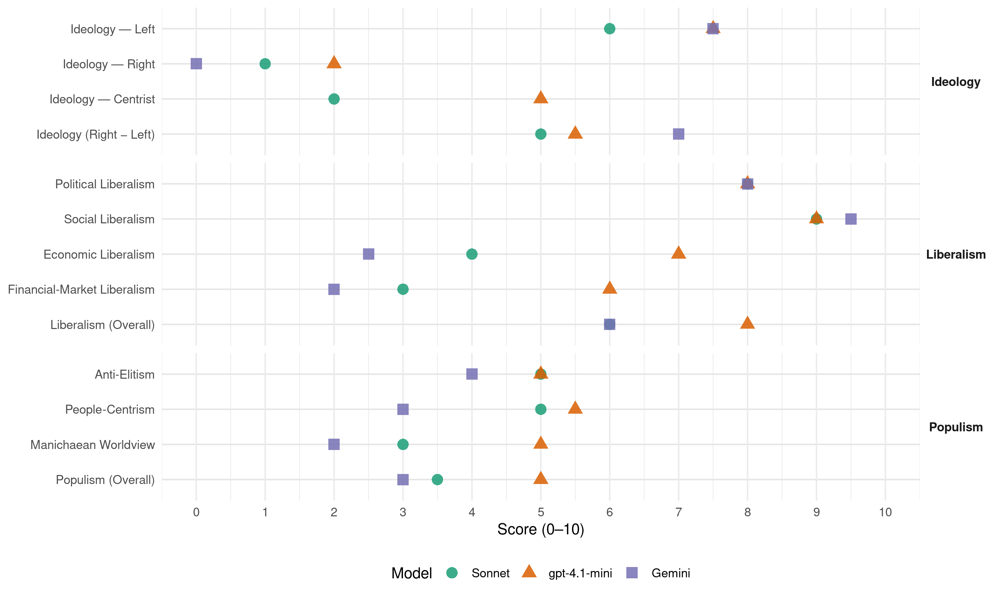

L (Portugal, 2019)
manifesto_id 35130_201910
Get full text: This site shows derived annotations and short verbatim quotes only. The full manifesto text is © Manifesto Project / WZB — obtain it via manifesto-project.wzb.eu using the manifesto_id above.
Headline scores
| Dimension | Sonnet | gpt-4.1-mini | Gemini |
|---|---|---|---|
| Populism (Overall) | 3.5 | 5.0 | 3.0 |
| Anti-Elitism | 5.0 | 5.0 | 4.0 |
| People-Centrism | 5.0 | 5.5 | 3.0 |
| Manichaean Worldview | 3.0 | 5.0 | 2.0 |
| Ideology (Right − Left) | 5.0 | 5.5 | 7.0 |
| Liberalism (Overall) | 6.0 | 8.0 | 6.0 |
| Political Liberalism | 8.0 | 8.0 | 8.0 |
| Social Liberalism | 9.0 | 9.0 | 9.5 |
| Economic Liberalism | 4.0 | 7.0 | 2.5 |
| Financial-Market Liberalism | 3.0 | 6.0 | 2.0 |
Evidence per dimension
Economic Liberalism
Gemini · score 2.0 · verified · chunk 1
“Recusamos a mercantilização das pessoas, do trabalho e da natureza”
decrescer no sentido de uma vida mais ampla e rica em tempo e comunidade. Recusamos a mercantilização das pessoas, do trabalho e da natureza.
Gemini · score 3.0 · verified · chunk 2
“regulamentacao da atividade industrial, principal geradora”
Esta alteracao de paradigma deve focar-se sobretudo na regulamentacao da atividade industrial, principal geradora de residuos
gpt-4.1-mini · score 7.0 · verified · chunk 1
“economia mista, com três setores (privado, público e associativo/cooperativo)”
…a ação governativa ou estatal seja crucial na criação de uma economia mista, com três setores (privado, público e associativo/cooperativo), o nosso socialismo não é um estatismo…
gpt-4.1-mini · score 7.0 · verified · chunk 2
“combater a monopolização da economia e a cartelização da política”
…libertar o futuro há que combater a monopolização da economia e a cartelização da política e rejeitar as anti-liberdades de oprimir, excluir e dominar. A sociedade por que lutamos caracteriza-se por ser feita de cidadãos sem medo, cidadãos com voz e por uma comunidade que protege e encoraja…
Sonnet · score 4.0 · verified · chunk 1
“Recusamos a mercantilização das pessoas”
Recusamos a mercantilização das pessoas, do trabalho e da natureza. Embora a ação governativa ou estatal seja crucial na criação de uma economia mista
Financial-Market Liberalism
Gemini · score 2.0 · verified · chunk 1
“Separar a banca comercial da banca de investimento”
colocando-os ao serviço da comunidade e do desenvolvimento económico, ecológico e solidário. Separar a banca comercial da banca de investimento, para que o risco
Gemini · score 2.0 · verified · chunk 2
“limitar o poder do setor financeiro”
implementando um quadro legislativo capaz de limitar o poder do setor financeiro e dominar os riscos da exposicao dos Estados
gpt-4.1-mini · score 6.0 · verified · chunk 1
“combate à evasão fiscal – nomeadamente para off-shores”
…Para isso, é necessário ir buscar o dinheiro onde ele está (paraísos fiscais, fuga ao fisco, juros pagos ao eurosistema, reestruturação da dívida) e colocar o sistema financeiro ao serviço das pessoas, assegurando uma verdadeira redistribuição. Por isso defendemos:…combate à evasão fiscal – nomeadamente para off-shores da renegociação da dívida pública…
gpt-4.1-mini · score 6.0 · verified · chunk 2
“implementando um quadro legislativo capaz de limitar o poder do setor financeiro”
Usar a escala da União Europeia para ter força de influência, relançando o investimento e combatendo a emergência ecológica com um Green New Deal europeu; implementando um quadro legislativo capaz de limitar o poder do setor financeiro e dominar os riscos da exposição dos Estados, incluindo a diminuição da concentração do poder de mercado e da dimensão das instituições financeiras, a separação entre banca comercial e banca de investimento e a proibição dos produtos financeiros excessivamente complexos; rejeitando a Resolução de Conflitos Investidor-Estado (ISDS) e o Sistema de Tribunais de Investimento e ainda qualquer tentativa de criar um Tribunal Multilateral de Investimentos; incorporando nas trocas comerciais critérios apertados de cumprimento de direitos humanos, direitos do trabalho e salvaguarda ambiental.
Sonnet · score 3.0 · verified · chunk 1
“taxação sobre as transações financeiras”
do reforço fiscal sobre património que não a habitação permanente e sobre as grandes fortunas, da taxação sobre as transações financeiras, da taxação das emissões de carbono
Sonnet · score 3.0 · verified · chunk 2
“a separação entre banca comercial e banca de investimento e a proibição dos produtos financeiros excessivamente complexos”
Portugal and the World section calling for limiting financial sector power, separating commercial and investment banking, prohibiting complex financial products
Political Liberalism
Gemini · score 8.0 · verified · chunk 1
“destruir o estado de direito democrático”
na Europa e no mundo pretende destruir o estado de direito democrático e esvaziar os nossos direitos fundamentais
Gemini · score 8.0 · verified · chunk 2
“estado de direito democratico e direitos fundamentais”
Não pode haver liberdade sem igualdade ou justiça, sem estado de direito democratico e direitos fundamentais, sem serviços públicos
gpt-4.1-mini · score 8.0 · verified · chunk 1
“defenderão na Assembleia da República depois das eleições legislativas”
…compromisso político que as eleitas e os eleitos do LIVRE defenderão na Assembleia da República depois das eleições legislativas de outubro de 2019…
gpt-4.1-mini · score 8.0 · verified · chunk 2
“Garantir o direito à informação clara e transparente, através da disponibilização de toda a informação pública relevante”
Garantir o direito à informação clara e transparente, através da disponibilização de toda a informação pública relevante em linguagem clara e em formatos facilmente acessíveis; da formação dos cidadãos e dos funcionários públicos nas questões de direito à informação; da criação de uma base de dados com toda a legislação em vigor; da disponibilização dos documentos, relatórios e trabalhos de assessoria técnica usados para suporte de decisões ou avaliação; da criação de uma interface online que permita seguir o estado de qualquer processo que o cidadão tenha em curso; da publicação dos perfis e currículos de qualquer decisor público; do reforço da autonomia e da independência do Instituto Nacional de Estatística, que deve passar a depender diretamente da Assembleia da República.
Sonnet · score 8.0 · verified · chunk 1
“destruir o estado de direito democrático”
política essa que na Europa e no mundo pretende destruir o estado de direito democrático e esvaziar os nossos direitos fundamentais
Sonnet · score 8.0 · verified · chunk 2
“Alargar, facilitar e fomentar o voto, permitindo o voto a partir dos 16 anos”
Democracy section proposing to expand voting rights, lower voting age, and facilitate political participation
Liberalism (Overall)
Gemini · score 6.0 · verified · chunk 1
“destruir o estado de direito democrático”
na Europa e no mundo pretende destruir o estado de direito democrático e esvaziar os nossos direitos fundamentais
Gemini · score 6.0 · verified · chunk 2
“estado de direito democratico e direitos fundamentais”
Não pode haver liberdade sem igualdade ou justiça, sem estado de direito democratico e direitos fundamentais, sem serviços públicos
gpt-4.1-mini · score 8.0 · verified · chunk 1
“programa declaradamente progressista e solidário, feminista e anti-racista”
…este programa é um programa declaradamente progressista e solidário, feminista e anti-racista, ecológico e libertário, socialista e democrático, cosmopolita e igualitário…
gpt-4.1-mini · score 8.0 · verified · chunk 2
“Garantir o direito à informação clara e transparente, através da disponibilização de toda a informação pública relevante”
Garantir o direito à informação clara e transparente, através da disponibilização de toda a informação pública relevante em linguagem clara e em formatos facilmente acessíveis; da formação dos cidadãos e dos funcionários públicos nas questões de direito à informação; da criação de uma base de dados com toda a legislação em vigor; da disponibilização dos documentos, relatórios e trabalhos de assessoria técnica usados para suporte de decisões ou avaliação; da criação de uma interface online que permita seguir o estado de qualquer processo que o cidadão tenha em curso; da publicação dos perfis e currículos de qualquer decisor público; do reforço da autonomia e da independência do Instituto Nacional de Estatística, que deve passar a depender diretamente da Assembleia da República.
Sonnet · score 6.0 · verified · chunk 1
“esvaziar os nossos direitos fundamentais”
política essa que na Europa e no mundo pretende destruir o estado de direito democrático e esvaziar os nossos direitos fundamentais
Sonnet · score 6.0 · verified · chunk 2
“universalidade e indivisibilidade dos direitos humanos, igual dignidade da pessoa humana”
closing section stating fundamental principles including universality and indivisibility of human rights and equal human dignity
Anti-Elitism
Gemini · score 4.0 · verified · chunk 1
“captura da política pelas grandes fortunas”
na qual a fuga aos impostos, o branqueamento de capitais e a captura da política pelas grandes fortunas têm resultado em desigualdades
Gemini · score 4.0 · verified · chunk 2
“vicios de fechamento, cartelizacao, clientelismo”
tem reforcado - de forma transversal a todos os partidos do atual sistema parlamentar - os seus vicios de fechamento, cartelizacao, clientelismo e carreirismo politico
gpt-4.1-mini · score 7.0 · verified · chunk 1
“a captura da política pelas grandes fortunas”
…capitalismo desregrado que gera uma globalização desequilibrada e insustentável, na qual a fuga aos impostos, o branqueamento de capitais e a captura da política pelas grandes fortunas têm resultado em desigualdades tão crescentes. Essas ameaças são a de um extrativismo…
gpt-4.1-mini · score 3.0 · verified · chunk 2
“libertar o futuro há que combater a monopolização da economia e a cartelização da política”
…a cartelização da política e rejeitar as anti-liberdades de oprimir, excluir e dominar. A sociedade por que lutamos caracteriza-se por ser feita de cidadãos sem medo, cidadãos com voz e por uma comunidade que protege e encoraja. Cidadãos sem medo: porque vivem numa sociedade que combate até à erradicação a precariedade, o desemprego, a pobreza ou a violência sexista, racista ou homofóbica…
Sonnet · score 4.0 · mixed · chunk 1
“captura da política pelas grandes fortunas”
a fuga aos impostos, o branqueamento de capitais e a captura da política pelas grandes fortunas têm resultado em desigualdades tão crescentes
Sonnet · score 5.0 · verified · chunk 2
“O mercado liberalizado de energia da Península Ibérica favoreceu, até hoje, grandes empresas. É tempo de favorecer os cidadãos.”
discussing energy market liberalization and its beneficiaries, contrasting large companies with citizens
Ideology — Centrist
gpt-4.1-mini · score 5.0 · verified · chunk 1
“nem pelo taticismo daqueles que pretendem responder ao nacionalismo e ao populismo”
…não podemos optar pela política costumeira do carreirismo e do clientelismo, nem pelo taticismo daqueles que pretendem responder ao nacionalismo e ao populismo da direita com nacionalismo e populismo supostamente à esquerda…
gpt-4.1-mini · score 5.0 · verified · chunk 2
“uma política em que todas e todos contam”
…a cartelização da política e rejeitar as anti-liberdades de oprimir, excluir e dominar. A sociedade por que lutamos caracteriza-se por ser feita de cidadãos sem medo, cidadãos com voz e por uma comunidade que protege e encoraja…
Sonnet · score 2.0 · verified · chunk 1
“programa declaradamente progressista e solidário”
este programa é um programa declaradamente progressista e solidário, feminista e anti-racista, ecológico e libertário, socialista e democrático, cosmopolita e igualitário
Sonnet · score 2.0 · verified · chunk 2
“Muitos sentem-se excluídos da vida política por sentirem que não têm voz”
Democracy section describing citizens feeling excluded from political life and lacking voice
Ideology — Left
Gemini · score 8.0 · verified · chunk 1
“reforço fiscal sobre património que não a habitação permanente e sobre as gran-des fortunas”
da renegociação da dívida pública, da eliminação das rendas indevidas no setor energético, do reforço fiscal sobre património que não a habitação permanente e sobre as gran-des fortunas, da taxação sobre as transações financeiras
Gemini · score 7.0 · verified · chunk 2
“capitalismo desregrado que faz dos trabalhadores mercadoria”
forcas poderosas concorriam… para desumanizar as nossas vidas. Sao elas um capitalismo desregrado que faz dos trabalhadores mercadoria
gpt-4.1-mini · score 8.0 · verified · chunk 1
“combater a pobreza, redistribuir a riqueza e promover a autonomia económica”
…Por isso defendemos: Combater a pobreza, redistribuir a riqueza e promover a autonomia económica, rejeitando o paradigma de crescimento económico vigente em favor de um paradigma de Desenvolvimento Ecológico e Solidário; implementando um programa nacional de combate à pobreza focado nas crianças e jovens…
gpt-4.1-mini · score 7.0 · verified · chunk 2
“combater a monopolização da economia e a cartelização da política”
…libertar o futuro há que combater a monopolização da economia e a cartelização da política e rejeitar as anti-liberdades de oprimir, excluir e dominar. A sociedade por que lutamos caracteriza-se por ser feita de cidadãos sem medo, cidadãos com voz e por uma comunidade que protege e encoraja…
Sonnet · score 6.0 · verified · chunk 1
“redistribuição, através da recuperação dos juros”
Aumentar as fontes de receitas do Estado e fomentar a redistribuição, através da recuperação dos juros pagos ao Eurosistema
Sonnet · score 6.0 · verified · chunk 2
“combater a monopolização da economia e a cartelização da política”
closing section on principles, calling to fight monopolization of economy and cartelization of politics
Ideology (Right − Left)
Gemini · score 8.0 · verified · chunk 1
“reforço fiscal sobre património que não a habitação permanente e sobre as gran-des fortunas”
da renegociação da dívida pública, da eliminação das rendas indevidas no setor energético, do reforço fiscal sobre património que não a habitação permanente e sobre as gran-des fortunas, da taxação sobre as transações financeiras
Gemini · score 6.0 · verified · chunk 2
“capitalismo desregrado que faz dos trabalhadores mercadoria”
forcas poderosas concorriam… para desumanizar as nossas vidas. Sao elas um capitalismo desregrado que faz dos trabalhadores mercadoria
gpt-4.1-mini · score 6.0 · verified · chunk 1
“política do egoísmo e do medo, fomentada pela xenofobia”
…Essas ameaças são as de uma política do egoísmo e do medo, fomentada pela xenofobia, a misoginia, o racismo, a homofobia e o autoritarismo, política essa que na Europa e no mundo pretende destruir o estado de direito democrático e esvaziar os nossos direitos fundamentais…
gpt-4.1-mini · score 5.0 · verified · chunk 2
“uma política em que todas e todos contam”
…a cartelização da política e rejeitar as anti-liberdades de oprimir, excluir e dominar. A sociedade por que lutamos caracteriza-se por ser feita de cidadãos sem medo, cidadãos com voz e por uma comunidade que protege e encoraja…
Sonnet · score 5.0 · verified · chunk 1
“socialista e democrático, cosmopolita e igualitário”
este programa é um programa declaradamente progressista e solidário, feminista e anti-racista, ecológico e libertário, socialista e democrático, cosmopolita e igualitário
Sonnet · score 5.0 · verified · chunk 2
“Desprivatizar a Administração Pública e o serviço público e reverter a concessão a privados das funções sociais do Estado”
State and Institutions section calling for de-privatization of public administration and reversal of private concessions
Ideology — Right
Gemini · score 0.0 · verified · chunk 1
“fomentada pela xenofobia, a misoginia, o racismo”
Essas ameaças são as de uma política do egoísmo e do medo, fomentada pela xenofobia, a misoginia, o racismo, a homofobia
Gemini · score 0.0 · verified · chunk 2
“retorica nacionalista que nega dignidade”
uma retorica nacionalista que nega dignidade e ate a vida a refugiados e migrantes
gpt-4.1-mini · score 2.0 · verified · chunk 1
“fomentada pela xenofobia, a misoginia, o racismo, a homofobia e o autoritarismo”
…Essas ameaças são as de uma política do egoísmo e do medo, fomentada pela xenofobia, a misoginia, o racismo, a homofobia e o autoritarismo, política essa que na Europa e no mundo pretende destruir o estado de direito democrático e esvaziar os nossos direitos fundamentais…
gpt-4.1-mini · score 2.0 · verified · chunk 2
“uma retórica nacionalista que nega dignidade e até a vida a refugiados e migrantes”
…forças poderosas concorriam à escala portuguesa, europeia e global, para desumanizar as nossas vidas. São elas um capitalismo desregrado que faz dos trabalhadores mercadoria, uma economia digital que dá mais soberania aos algoritmos do que às pessoas, uma retórica nacionalista que nega dignidade e até a vida a refugiados e migrantes, uma política em círculo fechado que dispensa a participação de cidadãs e cidadãos.
Sonnet · score 1.0 · verified · chunk 1
“Acabar com a venda de cidadania”
Acabar com a venda de cidadania, pondo fim ao programa dos Vistos Gold e Green.
Sonnet · score 1.0 · verified · chunk 2
“uma retórica nacionalista que nega dignidade e até a vida a refugiados”
listing forces LIVRE opposes, explicitly rejecting nationalist rhetoric that denies dignity to refugees
Manichaean Worldview
Gemini · score 2.0 · verified · chunk 1
“ameaças de uma política do egoísmo e do medo”
vencer as ameaças que enfrentamos. Essas ameaças são as de uma política do egoísmo e do medo, fomentada pela xenofobia
Gemini · score 2.0 · verified · chunk 2
“forcas poderosas concorriam… para desumanizar”
ao chegar a decada de 2020, forcas poderosas concorriam… para desumanizar as nossas vidas. Sao elas um capitalismo desregrado
gpt-4.1-mini · score 6.0 · verified · chunk 1
“ameaças são as de uma política do egoísmo e do medo”
…Essas ameaças são as de uma política do egoísmo e do medo, fomentada pela xenofobia, a misoginia, o racismo, a homofobia e o autoritarismo, política essa que na Europa e no mundo pretende destruir o estado de direito democrático e esvaziar os nossos direitos fundamentais…
gpt-4.1-mini · score 4.0 · verified · chunk 2
“forças poderosas concorriam à escala portuguesa, europeia e global, para desumanizar as nossas vidas”
A história registará que ao chegar à década de 2020, forças poderosas concorriam à escala portuguesa, europeia e global, para desumanizar as nossas vidas. São elas um capitalismo desregrado que faz dos trabalhadores mercadoria, uma economia digital que dá mais soberania aos algoritmos do que às pessoas, uma retórica nacionalista que nega dignidade e até a vida a refugiados e migrantes, uma política em círculo fechado que dispensa a participação de cidadãs e cidadãos.
Sonnet · score 3.0 · verified · chunk 1
“política do egoísmo e do medo”
Essas ameaças são as de uma política do egoísmo e do medo, fomentada pela xenofobia, a misoginia, o racismo, a homofobia e o autoritarismo
Sonnet · score 3.0 · verified · chunk 2
“um capitalismo desregrado que faz dos trabalhadores mercadoria”
listing powerful forces that dehumanize lives, including unregulated capitalism, digital economy, nationalist rhetoric
People-Centrism
Gemini · score 3.0 · verified · chunk 1
“colocar o sistema financeiro ao serviço das pessoas”
ir buscar o dinheiro onde ele está (paraísos fiscais, fuga ao fisco, juros pagos ao eurosistema, reestruturação da dívida) e colocar o sistema financeiro ao serviço das pessoas, assegurando uma verdadeira
Gemini · score 3.0 · verified · chunk 2
“cidadaos sem medo, cidadaos com voz”
A sociedade por que lutamos caracteriza-se por ser feita de cidadaos sem medo, cidadaos com voz e por uma comunidade que protege
gpt-4.1-mini · score 6.0 · verified · chunk 1
“mobilizar as pessoas para cooperar e reinventar a política”
…Por isso o LIVRE rejeita o pessimismo e ousa o optimismo. Porque só a generosidade, a audácia e a imaginação podem mobilizar as pessoas para cooperar e reinventar a política. Por isso este programa é um programa declaradamente progressista e solidário…
gpt-4.1-mini · score 5.0 · verified · chunk 2
“uma política em que todas e todos contam”
…a cartelização da política e rejeitar as anti-liberdades de oprimir, excluir e dominar. A sociedade por que lutamos caracteriza-se por ser feita de cidadãos sem medo, cidadãos com voz e por uma comunidade que protege e encoraja. Cidadãos sem medo: porque vivem numa sociedade que combate até à erradicação a precariedade, o desemprego, a pobreza ou a violência sexista, racista ou homofóbica…
Sonnet · score 4.0 · mixed · chunk 1
“colocar o sistema financeiro ao serviço das pessoas”
ir buscar o dinheiro onde ele está (paraísos fiscais, fuga ao fisco, juros pagos ao eurosistema, reestruturação da dívida) e colocar o sistema financeiro ao serviço das pessoas, assegurando uma verdadeira redistribuição
Sonnet · score 5.0 · verified · chunk 2
“uma política em que todas e todos contam”
closing section describing LIVRE’s political vision as one where everyone counts, invoking the people collectively
Populism (Overall)
Gemini · score 3.0 · verified · chunk 1
“captura da política pelas grandes fortunas”
na qual a fuga aos impostos, o branqueamento de capitais e a captura da política pelas grandes fortunas têm resultado em desigualdades
Gemini · score 3.0 · verified · chunk 2
“vicios de fechamento, cartelizacao, clientelismo”
tem reforcado - de forma transversal a todos os partidos do atual sistema parlamentar - os seus vicios de fechamento, cartelizacao, clientelismo e carreirismo politico
gpt-4.1-mini · score 6.0 · verified · chunk 1
“ameaças são as de uma política do egoísmo e do medo”
…Essas ameaças são as de uma política do egoísmo e do medo, fomentada pela xenofobia, a misoginia, o racismo, a homofobia e o autoritarismo, política essa que na Europa e no mundo pretende destruir o estado de direito democrático e esvaziar os nossos direitos fundamentais…
gpt-4.1-mini · score 4.0 · verified · chunk 2
“uma política em que todas e todos contam”
…a cartelização da política e rejeitar as anti-liberdades de oprimir, excluir e dominar. A sociedade por que lutamos caracteriza-se por ser feita de cidadãos sem medo, cidadãos com voz e por uma comunidade que protege e encoraja. Cidadãos sem medo: porque vivem numa sociedade que combate até à erradicação a precariedade, o desemprego, a pobreza ou a violência sexista, racista ou homofóbica…
Sonnet · score 3.0 · verified · chunk 1
“rejeita o pessimismo e ousa o optimismo”
Por isso o LIVRE rejeita o pessimismo e ousa o optimismo. Porque só a generosidade, a audácia e a imaginação podem mobilizar as pessoas para cooperar e reinventar a política
Sonnet · score 4.0 · verified · chunk 2
“É necessário libertar o Estado da captura privada e reequilibrar forças com o setor privado.”
section on State and Institutions, calling for freeing the state from private capture and rebalancing with private sector
Social Liberalism